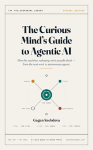

Current attractor 01
Loading the latest conclusion.
The daily ledger is passing through the signal gate.
Follow the evidence →Intelligence is becoming infrastructure / The Philosophical Ledger
I lead AI and agentic platforms at First Abu Dhabi Bank. Here I publish field notes, verified signals, and open-source systems for moving AI from impressive demos to governed execution.
Today in the Situation Room
Checking live data
Resolving the latest ledger…
Daily signal pipeline · verifying source files
The daily ledger is passing through the signal gate.
Follow the evidence →Updated daily from the signal pipeline. The homepage reads generated data directly from signal-gate.json and knowledge-graph.json; if the pipeline falls behind, this panel marks it stale.
Field Notes
What changes when agents move from demonstrations into institutions with real authority, memory, risk, and accountability.
New here? Start with the 3-essay path →Intelligence may be the largest market ever created — but once models cross the sufficiency threshold, each extra unit of general intelligence buys less enterprise value. The advantage moves to the system around the model.
Read the newest field note →Your real level is your weakest answer. The asymmetry is the diagnostic.
Find your level →
Book · FreeA free seven-part illustrated field guide — from next-word prediction to autonomous agents.
Open the book →About
I lead AI and agentic platforms at First Abu Dhabi Bank. Before that, eleven years across Debt Capital Markets and fintech innovation at Bank of America taught me how financial institutions decide: slowly when trust is missing, quickly when architecture and accountability are clear.
I build in the open because the argument should be inspectable. Agent OS and Ninja Harness turn traces, evaluation, memory, and approvals into working systems—not just polished answers.
Gartner Innovation in Financial Services judge, 2024–2025 · Published researcher · Father · Permanent student
Subscribe
One brief when the noise resolves into something worth acting on — verified signals, institutional implications, and no daily churn.